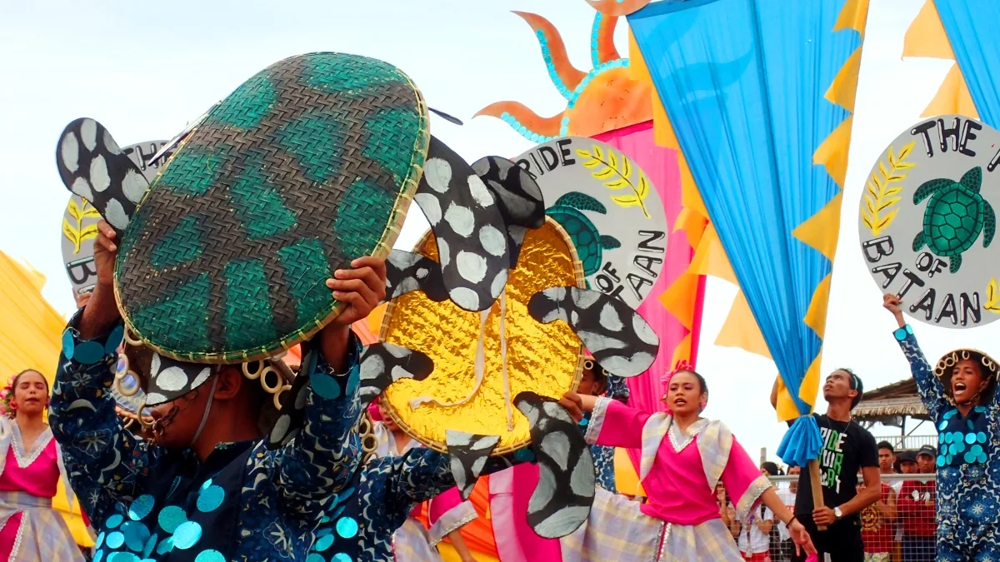
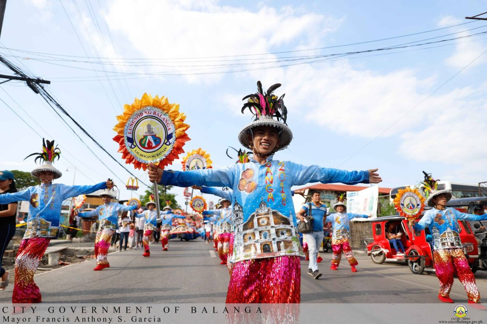
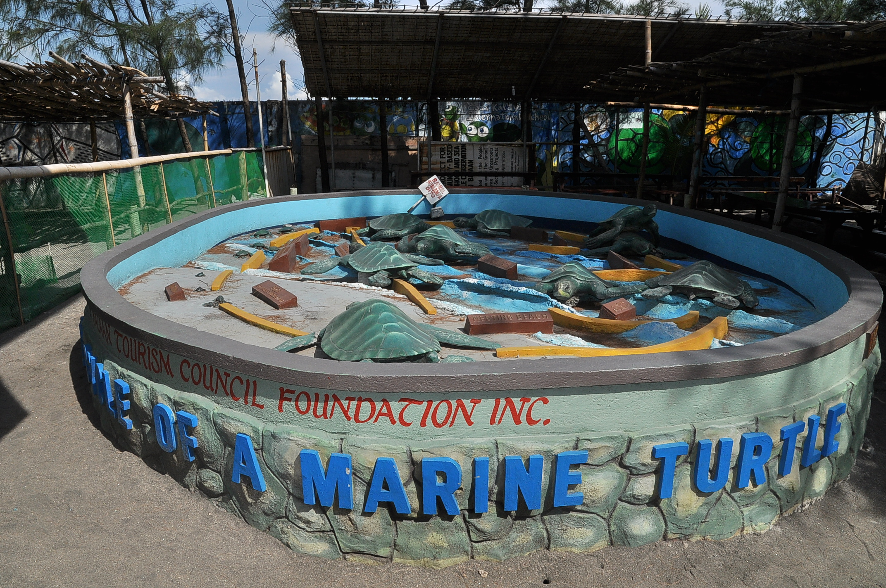

Banga-Festival (Balanga City)
The Banga Festival is an annual, vibrant cultural celebration held in Balanga City , Bataan, Philippines, celebrated every April 28th alongside the feast of St. Joseph. It commemorates the city's origins and honors its humble beginnings, with "banga" (Tagalog for clay pot) symbolizing the city's heritage through street dancing, parades, and cultural performances.
It features street dancing and cultural activities revolving around the banga (clay pot), which symbolizes the city's namesake.

Pawikan-Festival (Late November - Morong)
The Pawikan Festival is an annual celebration in the Philippines, most notably in Morong, Bataan (late November) and Naic, Cavite (February), dedicated to marine conservation and the protection of endangered sea turtles (pawikan).
The festival features ceremonial hatchling releases, coastal clean-ups, educational forums, and cultural activities to promote, this Facebook post says this Facebook post says community-led environmental stewardship.

Pagbubunyi Festival (Limay)
The Pagbubunyi Festival is a vibrant cultural and religious celebration held in Limay, Bataan, centered on the re-enactment of the search for the Holy Cross.
It features street dancing, colorful costumes, and performances depicting the quest of Queen Helena and Constantine for the cross of Jesus Christ.
Discover Bataan
A journey through historic landmarks and natural wonders.
Must-Visit Destinations
Mount Samat Shrine
Pilar, Bataan

Las Casas Filipinas
Bagac, Bataan

Five Fingers Cove
Mariveles, Bataan

Pawikan Center
Morong, Bataan

WWII Museum
Balanga City

Corregidor Island
Mariveles Port
About the Destination
Interactive Location
The Visionary of
1Bataan
Meet the architect of Bataan's modern transformation. A leader dedicated to bridging the gap between our heritage and a high-tech industrial future.
Government Officials
Hon. Jose Enrique Garcia III
Hon. Ma. Cristina Garcia

Hon. Atty. Antonino B. Roman, III

Hon. Albert S. Garcia

Hon. Maria Angela S. Garcia

Hon. Jomar L. Gaza, J.D.

Hon. Godofredo B. Galicia Jr.

Hon. Mylene A. Serrano
Public Service Background
PROVINCE Overview
Key facts and geographic information about the Province of Bataan.